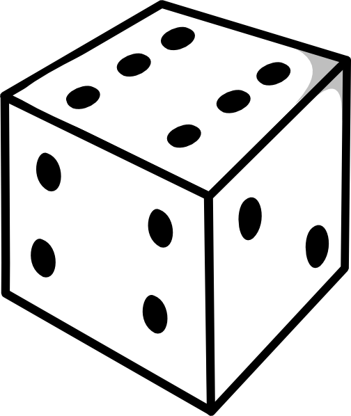
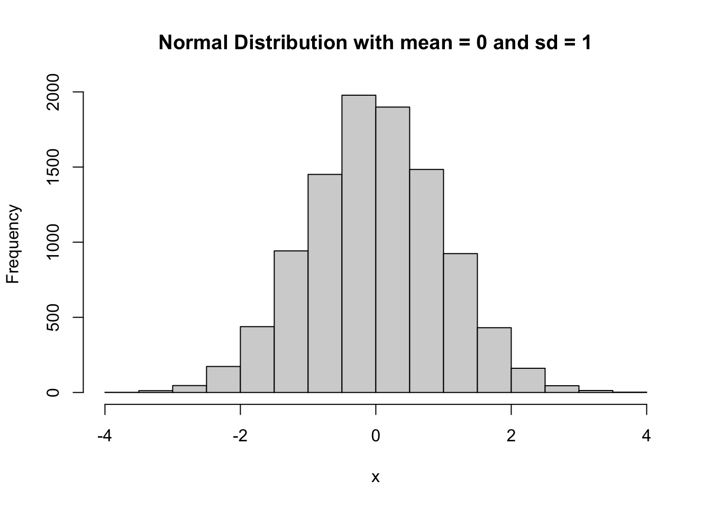
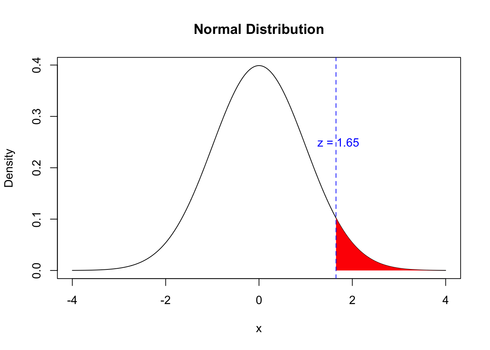
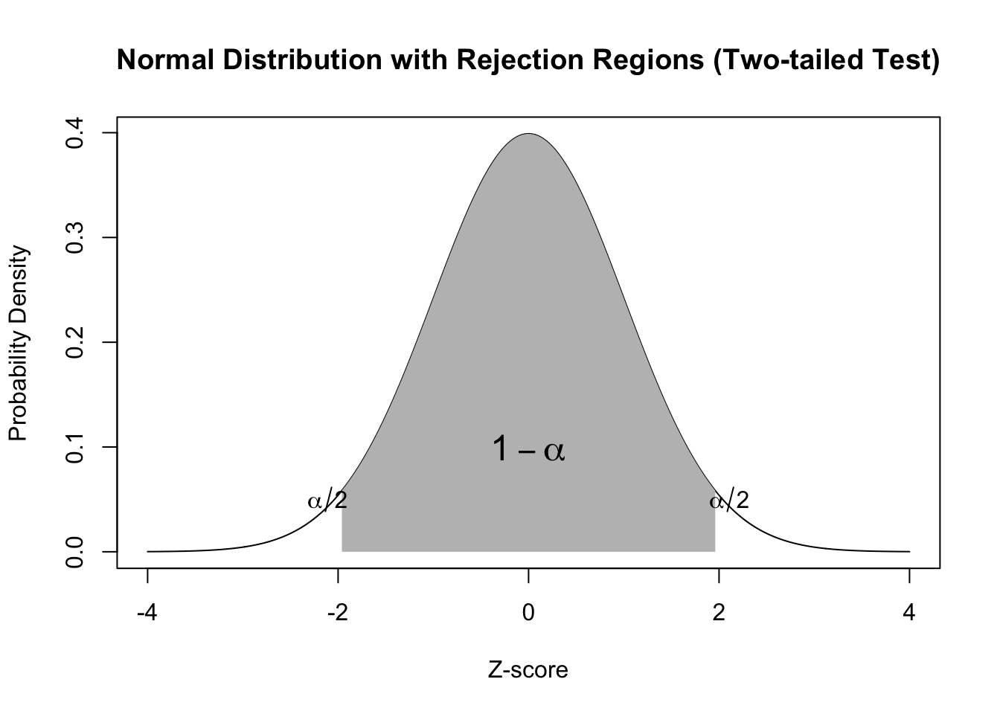

Descriptive statistics summarize and visualize data (means, standard deviations, graphs)
Inferential statistics make predictions and inferences about the population based on sample data
Hypothesis testing is a key component of inferential statistics
Fundamentals of Inferential Statistics
Statistics plays a crucial role in analyzing and interpreting collected data
Estimation: using sample statistics to estimate population parameters
Hypothesis testing: determining whether observed differences in sample data are statistically significant
Example: evaluating the effectiveness of a new exercise program for the larger population
Probability Concepts
Introduction to Probability Theory
Sample Space: {1, 2, 3, 4, 5, 6}
Event: odd # {1, 3, 5} and even # {2, 4, 6}

Probability theory deals with the analysis of random events and their associated outcomes
The sample space is the set of all possible outcomes of an experiment or trial
The sample space helps in identifying the range of potential outcomes that could arise from a trial
An event is a subset of the sample space that comprises a group of outcomes with a common characteristic
Probabilities are numerical values assigned to events, representing the likelihood of those events occurring
Probabilities range from 0 to 1, with 0 indicating that an event cannot occur and 1 indicating that the event is certain to occur
When flipping a coin, what is the sample space?
Probability Distributions
Introduction
# Set the seed for reproducibilityset.seed(123)# Generate a random sample from a normal distribution with mean 0 and sd 1x <-rnorm(10000, mean =0, sd =1)# Create a histogram of the datahist(x, main ="Normal Distribution with mean = 0 and sd = 1")

Probability distributions allow researchers to infer population parameters based on sample statistics
There are many types of probability distributions, we will focus on the most common ones
normal distribution
t-distribution
chi-square distribution
F-distribution
Binomial distribution
Types
Discrete Probability Distributions
Describes probabilities of different outcomes of a discrete variable
Can only take certain values
Examples: Binomial, Poisson, Discrete uniform
Continuous Probability Distributions
Describes probabilities of different outcomes of a continuous variable
Can take any value within a certain range
Examples: Normal, t-distribution, and chi-square distribution
Null Distributions
Hypothesis testing relies heavily on null distributions
Null distributions are probability distributions of a test statistic under the assumption of a true null hypothesis
A test statistic is a summary of a sample expressed as a single number
Examples of test statistics include z, t, F, and chi-square
To determine a p-value, the test statistic is compared to the corresponding null distribution
The p-value represents the probability of obtaining a test statistic value as extreme or more extreme than the sample’s value, assuming the null hypothesis is true
Example
Title: The Effect of a Modified Basketball Program on Motor Skills and Cognitive Function in Older Adults
This study used a test statistic (t-test) to compare the mean scores of motor skills and cognitive function between two groups of older adults: one group that participated in a modified basketball program and one group that did not. The results showed a significant difference in both motor skills and cognitive function between the two groups, with the basketball group performing better. The t-test was used to determine the probability of obtaining such a difference by chance alone and to determine the statistical significance of the findings.
PD Examples
Distribution
Description
Statistical tests
Standard Normal
Normal distribution with mean = 0 and standard deviation = 1
Z-tests
Binomial
Discrete distribution, number of successes in n independent trials
Chi-squared test, goodness of fit
Poisson
Discrete distribution, number of events in a fixed interval of time or space
Chi-squared test, goodness of fit
Exponential
Continuous distribution, time between successive events in a Poisson process
Survival analysis
t-distribution
Continuous distribution, used for small sample sizes
t-tests
F-distribution
Continuous distribution, used in ANOVA to test equality of variances
ANOVA
Chi-Square
Probability distribution used to test hypotheses about the relationship between two categorical variables
Chi-square goodness of fit test, chi-square test of independence
Sampling Error in Inferential Statistics
From sample to population
Inferential statistics uses samples from a population to make conclusions about the population.
Sampling error is the potential for error due to inherent variability in the sample.
Techniques to Reduce Sampling Error
Random sampling involves randomly selecting participants without bias or preference.
Stratified sampling involves dividing the population into subgroups based on certain characteristics and selecting a random sample from each subgroup.
Increasing the sample size can reduce random sampling error by providing a more representative sample of the population.
Levels of Confidence
Levels of Confidence in Inferential Statistics
Levels of confidence measure the uncertainty or variability in estimates when making inferences about a population based on a sample.
Levels of confidence represent the degree of certainty that the true population parameter falls within a certain range of values.
For example, a 95% level of confidence means that 95% of the resulting confidence intervals would contain the true population parameter if the study were repeated many times.
Application of Levels of Confidence in Kinesiology Research
Levels of confidence can be used to estimate the uncertainty in sample statistics and make inferences about population parameters in Kinesiology research.
For example, a study examining the effect of a new exercise program on cardiovascular fitness may calculate a 95% confidence interval for the mean difference in fitness levels between the exercise group and the control group
This confidence interval provides a range of values likely to contain the true population mean difference, with 95% confidence.
Factors Affecting the Choice of Levels of Confidence
The level of confidence chosen by a researcher depends on the level of risk associated with making an incorrect inference, the sample size, and the data’s variability.
Higher levels of confidence, such as 99%, require larger sample sizes and lead to wider confidence intervals.
Levels of confidence do not guarantee that the true population parameter falls within the confidence interval, but rather provide a measure of the likelihood that it does.
Levels of confidence do not provide information about the precision of the estimate, only the degree of certainty in the range of values.
Table
This table shows the corresponding values for the level of confidence (LOC), Z-value, and probability (p) in a standard normal distribution for the most commonly used levels of confidence in inferential statistics: 68%, 90%, 95%, and 99%. The values in the table can be used to calculate confidence intervals and perform hypothesis tests.
Level of Confidence (LOC)
Z-Value
Probability (p)
68%
1.00
0.32
90%
1.64
0.10
95%
1.96
0.05
99%
2.58
0.01
Estimation
Point Estimation
Method of statistical inference used to estimate an unknown population parameter using a single value called the point estimator.
Used in Kinesiology to estimate parameters such as mean height, weight, or strength of a population based on a sample.
Sample mean is a good estimator of the population mean because it is unbiased and has an expected value equal to it.
A biased estimator would be systematically off from the true population parameter.
Point estimators can vary from sample to sample, leading to sampling error.
Properties of a Good Point Estimator
Unbiasedness: the estimator has an expected value equal to the population parameter.
Efficiency: the estimator has a small variance and is more precise than other estimators.
Consistency: the estimator becomes closer to the population parameter as the sample size increases.
Example of Point Estimation in Kinesiology
Estimating maximum oxygen uptake (VO2max) of all collegiate athletes in the United States using a sample of 100 athletes.
Sample mean VO2max of the athletes is calculated as 60 ml/kg/min.
Sample mean used as the point estimator of the population mean VO2max.
Mean of all means will converge to the population mean VO2max as the sample size increases.
Interval Estimation
Method of statistical inference used to estimate an unknown population parameter using an interval of values called the confidence interval.
In Kinesiology, confidence intervals can be used to estimate various parameters, such as the difference in means between two groups or the effect size of an intervention.
Confidence intervals can test hypotheses about the population parameter by checking whether the hypothesized value falls within the interval.
For instance, if the null hypothesis is that there is no difference in mean jump height between male and female athletes, we can check whether the hypothesized value of zero falls within the 95% confidence interval.
If it does not, we can reject the null hypothesis at the specified level of significance.
Hypothesis Testing
Introduction
Method of statistical inference used to make decisions about population parameter based on sample data.
Commonly used in Kinesiology to test efficacy of interventions, compare groups of athletes/patients, and examine relationships between variables.
Null and Alternative Hypotheses
Null hypothesis (H0): Statement that assumes the population parameter is equal to a specific value or falls within a specific range.
Alternative hypothesis (Ha): Statement that contradicts the null hypothesis and assumes that the population parameter is different from the value or range specified by the null hypothesis.
Example:
Testing whether new training program increases mean strength of athletes.
Null hypothesis: Mean strength of athletes who follow program is equal to that of athletes who do not - hypothesis being tested
Alternative hypothesis: Mean strength of athletes who follow program is greater than that of athletes who do not.
Test Statistics and p-values
Test statistics: Measure the distance between sample statistic and hypothesized population parameter under null hypothesis.
t-test: Most commonly used test statistic, compares means of two groups.
p-value: Probability of observing a test statistic as extreme or more extreme than the one obtained from the sample data, assuming the null hypothesis is true.
Example:
Testing effect of new exercise program on reducing knee pain in patients with osteoarthritis.
t-value of 2.5 and p-value of 0.01.
p-value less than 0.05, reject null hypothesis and conclude that exercise program effectively reduces knee pain.
Type I and Type II Errors
Hypothesis testing involves making two types of errors: type I and type II.
Type I error: Null hypothesis is rejected even though it is true. False positive.
Type II error: Null hypothesis is not rejected even though it is false. False negative.
Type I errors can be particularly concerning in Kinesiology when testing efficacy of a new treatment or intervention.
Type II errors can lead to missed opportunity to identify effective treatment or intervention.
This table shows the possible outcomes of a hypothesis test based on whether the null hypothesis is true or false and whether the test correctly rejects or fails to reject the null hypothesis. A Type I error occurs when the null hypothesis is actually true, but the test incorrectly rejects it. A Type II error occurs when the null hypothesis is actually false, but the test incorrectly fails to reject it.
Null Hypothesis is True
Null Hypothesis is False
Reject Null Hypothesis
Type I Error (False Positive)
Correct Decision (True Positive)
Fail to Reject Null Hypothesis
Correct Decision (True Negative)
Type II Error (False Negative)
Effect Size and Power Analysis
Effect size measures strength of relationship between two variables or magnitude of difference between two groups.
Used in hypothesis testing to supplement p-value and provide more meaningful interpretation of results.
In Kinesiology, effect size can be used to determine practical significance of study’s findings.
Power analysis is statistical technique used to determine sample size needed to detect certain effect size with certain level of statistical power.
Statistical power is probability of correctly rejecting null hypothesis when it is false.
In Kinesiology, power analysis can be used to plan sample size for a study to ensure adequate statistical power and reduce risk of type II errors.
One-Tailed and Two-Tailed Statistical Tests
Researchers choose between one-tailed or two-tailed tests based on the research question and hypotheses.
A one-tailed test is used when the research question involves a specific directional prediction about the relationship between the variables.
A two-tailed test is used when the research question involves a non-specific directional prediction about the relationship between the variables.
One-Tailed Test
The critical region for rejecting the null hypothesis is located in only one tail of the distribution, either the upper or the lower tail, depending on the direction of the prediction.
One-tailed tests are used when the research question involves a specific directional prediction.
A one-tailed test has more power to detect a significant effect in a specific direction, but it also has a higher risk of a Type I error if the direction of the effect is incorrect.
Example
# set mean and standard deviationmu <-0sigma <-1# create x-axis valuesx <-seq(-4, 4, by =0.01)# create normal distributiony <-dnorm(x, mean = mu, sd = sigma)# plot normal distributionplot(x, y, type ="l", xlab ="x", ylab ="Density", main ="Normal Distribution")# shade rejection regionx_reject <-seq(1.65, 4, by =0.01)y_reject <-dnorm(x_reject, mean = mu, sd = sigma)polygon(c(x_reject, 4, 4, x_reject[1]), c(y_reject, 0, dnorm(4, mean = mu, sd = sigma), 0), col ="red", border =NA)# indicate z-score for rejection regionabline(v =1.65, col ="blue", lty =2)text(1.7, 0.25, "z = 1.65", col ="blue")

Figure 1: Distribution of α rejection area for a One-tailed test.
Two-Tailed Test
The critical region for rejecting the null hypothesis is located in both tails of the distribution, representing extreme values in either direction.
Two-tailed tests are used when the research question involves a non-specific directional prediction.
A two-tailed test has less power to detect a significant effect but is more conservative and less likely to make a Type I error.
Example
# Define mean and standard deviationmu <-0sigma <-1# Create x-axis valuesx <-seq(-4, 4, length.out =1000)# Calculate y-axis values using probability density functiony <-dnorm(x, mean = mu, sd = sigma)# Plot normal distributionplot(x, y, type ="l", xlab ="Z-score", ylab ="Probability Density",main ="Normal Distribution with Rejection Regions (Two-tailed Test)")# Define alpha levelalpha <-0.05# Define rejection regionslower_reject <-qnorm(alpha/2, mean = mu, sd = sigma)upper_reject <-qnorm(1-alpha/2, mean = mu, sd = sigma)# Shade rejection regionspolygon(c(lower_reject, seq(lower_reject, upper_reject, length.out =100), upper_reject),c(0, dnorm(seq(lower_reject, upper_reject, length.out =100), mean = mu, sd = sigma), 0),col ="gray", border =NA)# Add text labels for rejection regionstext(lower_reject -0.15, 0.05, expression(alpha/2))text(upper_reject +0.15, 0.05, expression(alpha/2))# Add text label for non-rejection regiontext((lower_reject + upper_reject)/2, 0.1, expression(1-alpha), cex =1.5)

Figure 2: Distribution of α rejection area for a two-tailed test
Choosing between one-tailed and two-tailed tests
The choice between a one-tailed and two-tailed test depends on the research question and the hypothesis being tested.
When the research question is directional, or the hypothesis specifies the direction of the effect, a one-tailed test is appropriate.
When the research question is non-directional, or the hypothesis does not specify the direction of the effect, a two-tailed test is appropriate.
It is important to choose the appropriate test to ensure the validity and accuracy of the results.